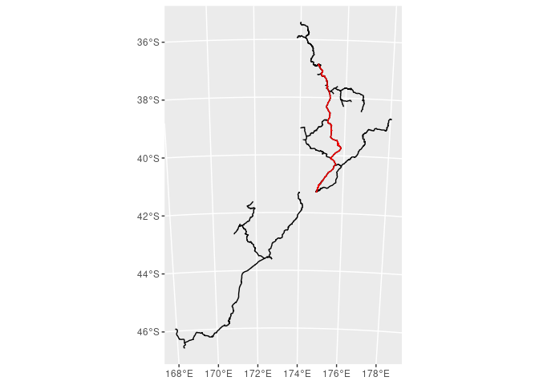

Identifying spatial network issues
Spatial networks: the challenge
I’ve blogged many times previously about the insights enabled by spatial networks - especially those resulting from route operations. I’ve so far relied on the vast Openstreetmap (OSM) via osmnx for my analyses. However, I have had some issues importing non-OSM data into a spatial network using omsnx. so, I’ve recently been exploring spatial networks from “custom” non-OSM geospatial datasets using the excellent sfnetworks package in R.
As part of some side projects at work (and a general interest) I’ve wanted to work with rail network data - while available through OSM are also available in New Zealand through more “official sources” like LINZ to Kiwirail open data. Unfortuntely, I quickly hit some snags after a period of initial excitement. My main frustrations were trying to understand why I couldn’t create a route between two clearly connected points on the network. Eventually, I realised that I needed to amend my network analysis workflow to include significant pre-processing and diagnostic tools to check network connectivity.
This post goes through a simple diagnostic for checking network connectivity and highlights basic steps to create a connected, routeable network. The corrections I’ve applied may not be sufficient for a different network / use case but they are a great starting point.
Set up
All code for this post can be found on github. The renv.lock provides the package dependencies to run this project - though it is far from a parsimonious specification as I use my projects to explore. The package can be reduced considerably as there are several package requirements (e.g. ggraph, leaflet) not needed for this particular example.
I downloaded the New Zealand rail network from the kiwirail open data hub as a geodatabase but other formats are also available. Included in the repo is a file of port locations (port_locs dataframe) from around the world though this example (and some subsequent ones) will only use a subset of New Zealand ports.
# kiwirail data from
# https://data-kiwirail.opendata.arcgis.com/datasets/kiwirail-track-centreline
# Basic filter and transform of rail network from Kiwirail
# only keeping tracks
nz_rail <- st_read(here::here("data", "kiwirail.gdb")) %>%
filter(!Type %in% c("Crossover", "Yard Track")) %>%
st_transform(2193) %>%
st_cast("LINESTRING")Creating a routeable rail network
The excellent new sfnetworks package offers a very simple way to create a routeable network, a graph structure, from any spatial points or lines dataset. Note, the railway network, originally a multi-linestring spatial lines dataset has to be cast as a simpler linestring for the conversion to an sfnetwork data format. This is done at the outset - when the dataset is imported.
railway_net <- nz_rail %>%
as_sfnetwork(directed=F) Associating external data with network nodes
In many cases of routing problems, we’re interested in the route to a point of interest (POI) that is defined separately. Here, the POIs are port locations. For routing to be possible, these POIs need to be associated to a node in the sfnetwork graph. For the inclusion of new The new st_nearest_feature is a helper function in the sfnetworks package that finds the index of the closest feature (nodes or edges depending on choice) to the POI. In this example, we are trying to find a route from Auckland to Wellington, New Zealand.
# Isolate nodes as an sf dataframe for ease of use
nodes_rail <- railway_net %>% activate("nodes") %>% st_as_sf()
# Specify origin and destination
from = "Auckland"
to = "Wellington"
# Tibble of origin and destination and index of closest node
orig_dest <- bind_cols(tibble(from_port = port_locs %>%
filter(port_name == from) %>%
pull(geometry)),
tibble(to_port = port_locs %>%
filter(port_name == to) %>%
pull(geometry))) %>%
st_as_sf(crs = 2193) %>%
mutate(to_index = st_nearest_feature(to_port, nodes_rail),
from_index = st_nearest_feature(from_port, nodes_rail),
route = row_number())Routing
Once the indices of the POIs are found, we can use the st_network_paths wrapper function to find the shortest path between a single point of origin and a vector of destinations. However, the function returns no path as seen by the empty list in the edge_paths column.
# returns function that includes the global sfnetwork object
# afaik the map and pmap functions can only refer to columns
# within the tibble when used inside mutate
st_network_paths_mod <- function(from, to){
return(try(st_network_paths(railway_net, from, to)))
}
# Look at the expanded tibble of edge_paths and node_paths returned from
# shortest path calculation
routes_df <- orig_dest %>%
mutate(path = pmap(list(from = from_index, to = to_index), .f=st_network_paths_mod)) %>%
unnest(cols=c(path)) %>%
unnest(cols=c(node_paths, edge_paths)) %>%
select(-from_port, -to_port)
routes_df## Simple feature collection with 0 features and 5 fields
## Bounding box: xmin: NA ymin: NA xmax: NA ymax: NA
## CRS: EPSG:2193
## # A tibble: 0 x 6
## # … with 6 variables: to_index <int>, from_index <int>, route <int>,
## # node_paths <int>, edge_paths <int>, from_port <GEOMETRY [m]>Diagnosing issues
The difficulty with spatial networks is that they may appear connected to the naked eye but there are some insidious issues that manifest as a disconnected graph. A simple diagnostic is to examine the connectivity of all the nodes in the network.
I’ve chosen the simplest connectivity metric: the node degree i.e. the number of edges connected to any node. When the degree is 1, the node is only connected to a single edge. Terminal nodes, where the tracks end, are legitimate single degree nodes. However, as the interactive graph below shows, the whole rail sfnetwork is comprised of disconnected, single connection nodes. No wonder the routing algorithm couldn’t find a path!
open_ended_nodes <- railway_net %>%
activate("nodes") %>%
mutate(degree = centrality_degree()) %>%
st_as_sf() %>%
mutate(row = row_number()) %>%
filter(degree == 1)
disconnected_edges <- railway_net %>%
activate("edges") %>%
st_as_sf() %>%
filter(from %in% open_ended_nodes$row | to %in% open_ended_nodes$row)
# Visualise connectivity
mapview(railway_net %>% activate("edges") %>% st_as_sf(), layer.name="rail network") +
mapview(disconnected_edges, color="red", layer.name = "nodes with only 1 edge") +
mapview(open_ended_nodes, color="red", col.regions="red", layer.name = "edges of 1 edge nodes")Managing the issues
After some time purusing the excellent vignettes on the sfnetworks site and some googling, I found that there were two key issues preventing the creation of a connected network:
too high precision of coordinates leading to small gaps between what should be connected edges and,
edges connected to interior nodes rather than terminal nodes.
The first is a data problem - where coordinate precision is slightly off possibly due to rounding precision set by the GIS export. The degree of rounding to the nearest 10 m is likely a little high and I will be looking to decrease it in the near future. The second problem appears to be a peculiarity of the sfnetworks paradigm where edges that aren’t connected at terminal nodes are considered disconnected.
Luckily, solving these two issues is not too challenging with sensible suggestions here for the first problem and sfnetworks documentation on the operation to_spatial_subdivision for the second. I’ve also included a to_simple_simple morpher to decrease the size of the network object which more light weight visualisations and, faster processing on the network.
# rounding coordinates to prevent precision errors
# which created disconnected edges in the network
st_geometry(nz_rail) <- nz_rail %>%
st_geometry() %>%
map(~round(., -1)) %>%
st_sfc(crs = st_crs(nz_rail))
# subdividing edges where intersections happen at
# internal points. excluding this creates a disconnected network
# because sfnetwork only connects edges where edges join at the
# terminal nodes
railway_net <- nz_rail %>%
as_sfnetwork(directed=F) %>%
convert(to_spatial_subdivision) %>%
convert(to_spatial_simple)A connected network?
If we repeat the same routing calculation between the two points, we see now that there is a path! Note, the origin and destination indices need to be recalculated since the network has been transformed in a couple of ways.
# re-extract nodes list
nodes_rail <- railway_net %>% activate("nodes") %>% st_as_sf()
# Tibble of origin and destination and index of closest node
orig_dest <- bind_cols(tibble(from_port = port_locs %>%
filter(port_name == from) %>%
pull(geometry)),
tibble(to_port = port_locs %>%
filter(port_name == to) %>%
pull(geometry))) %>%
st_as_sf(crs = 2193) %>%
mutate(to_index = st_nearest_feature(to_port, nodes_rail),
from_index = st_nearest_feature(from_port, nodes_rail),
route = row_number())
# Recalculate route
routes_df <- orig_dest %>%
mutate(path = pmap(list(from = from_index, to = to_index), .f=st_network_paths_mod)) %>%
unnest(cols=c(path))
# Extract and enrich route with coordinates for visualisation
auck_wlg <- routes_df %>%
unnest(edge_paths) %>%
select(edge_paths) %>%
st_drop_geometry() %>%
inner_join(railway_net %>%
activate("edges") %>%
st_as_sf() %>%
mutate(edge = row_number()), by = c("edge_paths" = "edge")) %>%
st_as_sf()
# Visualise route
ggplot() +
geom_sf(data = railway_net %>% activate("edges") %>% st_as_sf()) +
geom_sf(data=auck_wlg, colour="red") 
Why does routing work now?
Repeating the calculation of the node degree, we now see that there are very few disconnected nodes in the corrected network. The nodes that are disconnected and not at the end of the tracks are actually odd little side tracks - probably around railway stations and junctions.
open_ended_nodes <- railway_net %>%
activate("nodes") %>%
mutate(degree = centrality_degree()) %>%
st_as_sf() %>%
mutate(row = row_number()) %>%
filter(degree == 1)
disconnected_edges <- railway_net %>%
activate("edges") %>%
st_as_sf() %>%
filter(from %in% open_ended_nodes$row | to %in% open_ended_nodes$row)
# Visualise corrected network
mapview(railway_net %>% activate("edges") %>% st_as_sf(), layer.name="rail network") +
mapview(disconnected_edges, color="red", layer.name = "nodes with only 1 edge") +
mapview(open_ended_nodes, color="red", col.regions="red", layer.name = "edges of 1 edge nodes")